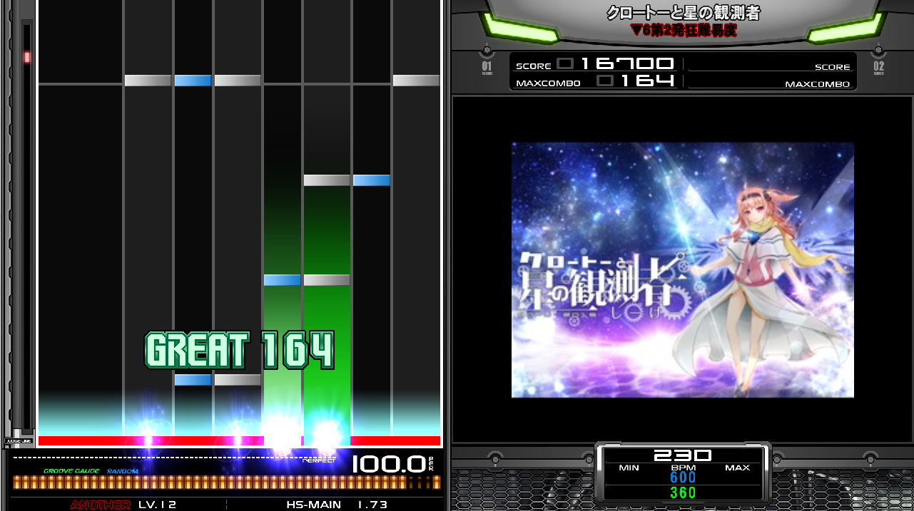

私のおすすめのゲームはBMSという音楽ゲームです。
BMSとはやねうらお氏とNBK氏が共同開発した音楽制作・演奏が可能なファイルフォーマットです。
またそれを利用した音楽ゲームのことをBMSと呼びます。
音楽ゲームとしてのBMSは7つの鍵盤をたたいてスクラッチを回したりして遊ぶフリーの音楽ゲームです。
BMSの特徴として個人が作成した曲データが公開されていて、それをダウンロードして遊ぶことができいろいろな曲を遊ぶことができます。また自分で作曲したり譜面を作ったりすることもできます。
その影響で、とても難易度の高い譜面があったり、それでもクリアしてしまうプレイヤーがいたりします。
BMSをプレイするには曲データであるBMSと演奏するための本体を用意する必要があります。
本体についてはLR2かbeatorajaが主流で、私のおすすめは新しく機能が多いbeatorajaです。
本体をダウンロードした後は曲をダウンロードするんですが、曲データは何曲かまとまっているパッケージがあるので「BMS package」で検索してください。
曲・本体ともに無料でダウンロードでき、いくらでも遊べます。
幅広い難易度があり、音楽ゲームをやったことない人から、音楽ゲームをやりこんでいる人まで楽しめます。
誰でも作曲できるので、多数のジャンルの音楽が遊べます。中にはプロになった作曲者さんもいます。
パソコンとキーボードがあればいつでもできるいいゲームですので、気になった方は初めて見ませんか？

前のページ